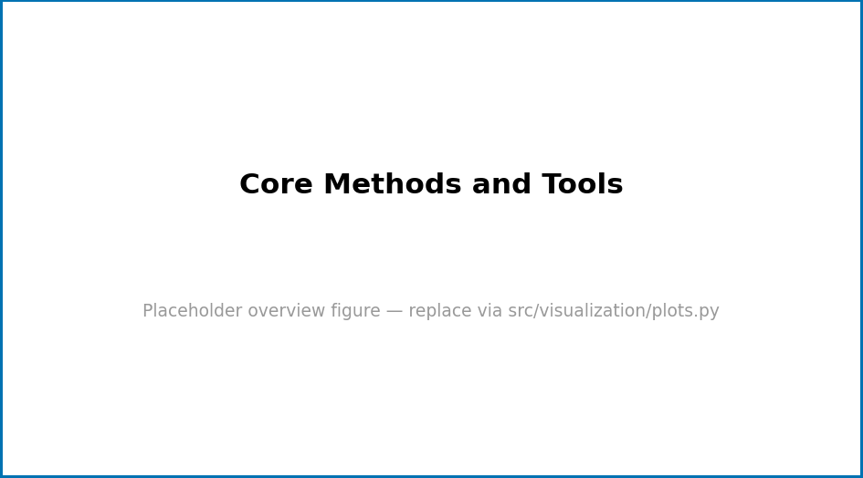

Core Methods and Tools

src/visualization/plots.py.Level 1/3 · 30 min read · 45 min lecture · Prerequisites: none
Learning Objectives
By the end of this chapter you should be able to:
- TODO: state the first measurable learning objective.
- TODO: state the second learning objective.
- TODO: state the third learning objective.
Study Blueprint
- Big idea:
- Core concepts: model, parameter, variable.
- Quantitative lens: the worked formalism in [eq:part_0_core_methods_model].
- Data skill:
- Common misconception to repair:
- Primary lab: [sec:lab_part_0_core_methods].
- Question bank: [sec:q_part_0_core_methods].
- Bridge to computation:
textbook.models.
Opening Vignette: TKTK — a motivating story
Orientation
This section introduces the central ideas of Core Methods and Tools. Foundational treatments include [kim2020data; brown2017principles]. Key terms such as model, parameter, variable are defined in the glossary.
A Worked Formalism
The recurring quantitative model for this chapter is shown in [eq:part_0_core_methods_model]:
\[ N(t) = \frac{K}{1 + \left(\dfrac{K - N_0}{N_0}\right) e^{-rt}} \] {#eq:part_0_core_methods_model}
It is implemented and tested in
textbook.models.logistic_growth; never retype the maths in
prose or scripts — call the tested function. The parameters appear in
[tbl:part_0_core_methods_parameters].
| Symbol | Meaning | Units |
|---|---|---|
| \(r\) | intrinsic rate | 1/time |
| \(K\) | carrying capacity | quantity |
| \(N_0\) | initial value | quantity |
A concept map of how the pieces fit together:
graph TD
A[Inputs / assumptions] --> B[Model]
B --> C[Predictions]
C --> D[Comparison with data]
D -->|revise| ANote
Going Deeper
See the overview in [fig:part_0_core_methods] and revisit the objectives above as you read. Further evidence: [kim2020data; brown2017principles].
Summary
Key Terms
emergence, regulation, boundary, state.
Further Reading
- TODO: one-line annotation [wilson2021analysis].
Practice
- Lab: [sec:lab_part_0_core_methods]
- Question bank: [sec:q_part_0_core_methods]